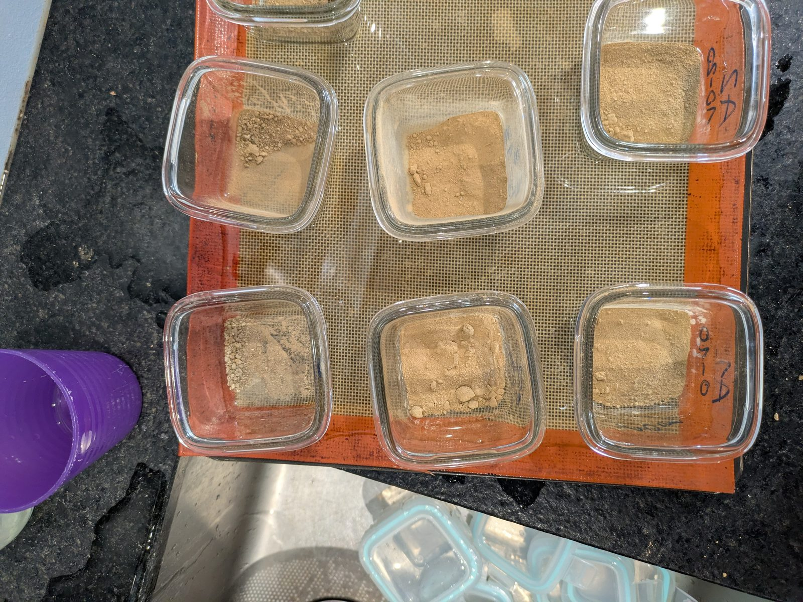

Photos
Photos from the tests, resized, with no EXIF data and no location; the date each was taken is in its caption. Licence CC BY 4.0.




Home › Moisture in cob
Photos from the tests, resized, with no EXIF data and no location; the date each was taken is in its caption. Licence CC BY 4.0.
